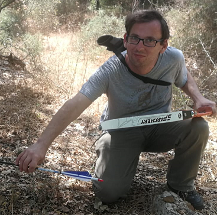

Why am I interested in Coding

My Profesional Life

My Hobbies
My Cities
Cities I've lived in
- I was born in Chișinău, the capital of Moldova.
- Since I was 3, I've lived in Nof HaGalil.
Citities I want to Visit
- Kyoto, once the capital of Japan, is a city on the island of Honshu.
- Montreal, an important centre of technology, art, culture, tourism, food, gaming and film.